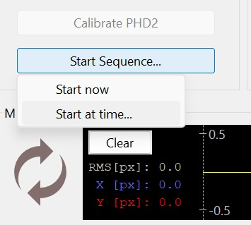
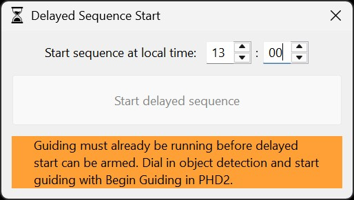
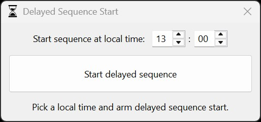
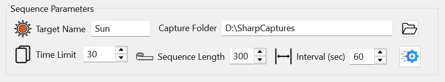

The Sequence Options dialog contains settings that affect how HelioMaker starts, pauses, resumes, and protects an imaging sequence. Open it from the sequence options button next to the sequence timing controls on the main screen, or from the Setup menu.
Run SharpCap refocus periodically and Pause sequence while no object is detected need HelioMaker to see the target: when PHD2 guides with its own camera rather than the Virtual Planetary Camera, PHD2 must share its camera images with HelioMaker, and if it cannot, HelioMaker says so when PHD2 is linked.

Delayed-start and frame/time-limit mode can be changed only when no sequence is active. This avoids changing the meaning of the running sequence in the middle of a capture session.
The Sun and Moon dim naturally as they approach the horizon. Choose the body shown in the camera image (Sun or Moon, also when imaging only part of its surface) so the cloud detector can tell that from clouds or haze; Planet or other, the default, is for a planet or any other target. Find & Track shows the choice on its own line below the Sky readout (Sun, Moon or Planet or other; see Observed target in the Find & Track help), and changing it starts a new evaluation. This setting does not move the mount or change its tracking.
When selecting Sun or Moon, verify the observer location and time zone in Dynamic Target Tracking, and check the PC's date, time and time-zone settings. HelioMaker uses the observer location and current UTC time to estimate the target's altitude and expected atmospheric dimming. Incorrect location or time information can make normal dimming appear to be cloud or haze.
When delayed start is enabled, the Start Sequence control lets you either start immediately or arm the sequence for a specified time. Delayed start can be armed only after PHD2 guiding has already started; if guiding is not active, HelioMaker shows a message explaining that guiding must begin before the delayed sequence can be scheduled.



In time-limit mode, the main screen shows a time-limit field instead of the frame-count field. If the selected capture cycle becomes long enough to allow noticeable target drift, consider enabling Continuous Guiding on the main screen.

HelioMaker can periodically pause the active sequence and ask SharpCap Pro to run its autofocus routine between capture cycles. This helps recover focus drift caused by temperature changes, seeing changes, or long sessions. This setting does not affect eclipse imaging; eclipse refocusing is controlled by the eclipse plan.
Before enabling this feature, perform a one-time focusing run in SharpCap using your preferred focusing method. For example, one reported workflow is to open Focus Assistant in SharpCap Pro, select Fourier Detail Detection while HelioMaker is guiding on solar surface features, select a small area of interest containing a prominent feature, and run a focus scan. After that focusing run completes successfully, HelioMaker can be configured to run automatic refocusing at the specified intervals.
This initial SharpCap focusing run is required because SharpCap needs previous autofocus information before it can perform a later refocus operation. Without this step, automatic refocusing will fail and will not have any effect.
The Session area shows the result of the most recent refocus run. A failed or canceled refocus does not by itself end the sequence; HelioMaker resumes according to the current sequence and guiding recovery settings.
HelioMaker can pause a running sequence while it cannot detect the target, for example because of clouds or an obstruction, and resume it once detection is steady again.
The pause is armed only after the target has been detected once during the sequence, so a slow start does not pause it. In this version the Sky readout itself does not pause or resume a sequence, with one exception: a pause while the readout shows No usable image lasts until it shows Clear. Resuming by hand always resumes at once.
The Sky readout works in Full Disk/Crescent, Planetary and Surface Features detection, and is off during eclipse runs and SHG scans. Sky conditions in the Find & Track help describes every reading. Set the Observed target so it can tell the normal dimming of the Sun or Moon near the horizon from clouds.
During guiding recovery, HelioMaker shows settling-style status information, including lock distance and timing. If detection becomes unstable again, the detection-loss pause can still pause the sequence during this recovery period.
The Reset to defaults button restores Sequence Options to their defaults. Options that cannot be changed while a sequence is active remain unchanged in that state.